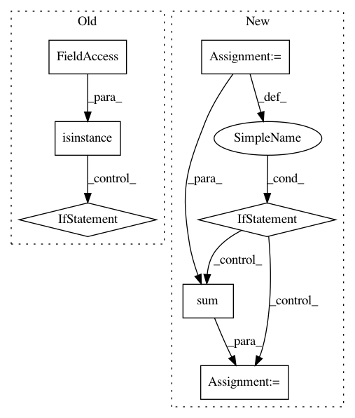

088b10a9b6621472af54635e761bda0dd775836f,Orange/classification/majority.py,MajorityLearner,__call__,#MajorityLearner#Any#,8
Before Change
"Majority learner does not support multiple classes")
class_var = data.domain.class_var
y = data.Y
if isinstance(data.domain.class_var, data.ContinuousVariable):
return DefaultClassifier(data.domain, bn.nanmedian(y))
else:
n_values = data.domain.class_var.values()
if y.dtype != int:
nans = y.isnan()
y = np.array(y, dtype=int)
y[nans] = len(n_values)
if data.W.shape[-1] == 0:
distr = np.bincount(y, minlength=n_values)
else:
distr = np.bincount(y, data.W, minlength=n_values)
After Change
assert np.issubdtype(y.dtype, int)
n_values = data.domain.class_var.values()
dist = np.bincount(y, w, minlength=n_values).astype(float)[:n_values]
N = sum(dist)
if N > 0:
dist /= sum(dist)
else:
dist.fill(1/len(dist))
return ConstantClassifier(data.domain, dist=dist)
class ConstantClassifier(classification.Classifier):
In pattern: SUPERPATTERN
Frequency: 3
Non-data size: 7
Instances
Project Name: biolab/orange3
Commit Name: 088b10a9b6621472af54635e761bda0dd775836f
Time: 2012-09-26
Author: janez.demsar@fri.uni-lj.si
File Name: Orange/classification/majority.py
Class Name: MajorityLearner
Method Name: __call__
Project Name: geomstats/geomstats
Commit Name: b7efa1f037f8adc94a28fc421dd7934b63b3043e
Time: 2020-04-22
Author: 62605255+pchauchat@users.noreply.github.com
File Name: geomstats/_backend/tensorflow/__init__.py
Class Name:
Method Name: assignment_by_sum
Project Name: geomstats/geomstats
Commit Name: b7efa1f037f8adc94a28fc421dd7934b63b3043e
Time: 2020-04-22
Author: 62605255+pchauchat@users.noreply.github.com
File Name: geomstats/_backend/tensorflow/__init__.py
Class Name:
Method Name: assignment